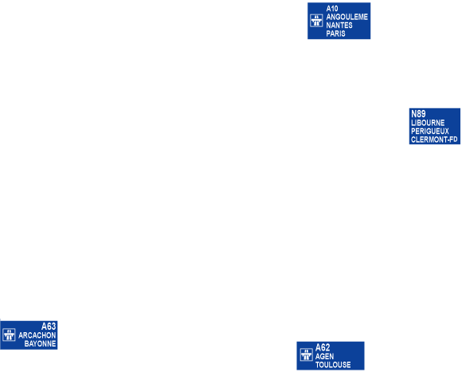

<!DOCTYPE html>
<html ng-app="ionicApp">

<head>
    <meta charset="utf-8">
    <meta name="format-detection" content="telephone=no">
    <meta name="msapplication-tap-highlight" content="no">
    <!-- WARNING: for iOS 7, remove the width=device-width and height=device-height attributes. See https://issues.apache.org/jira/browse/CB-4323 -->
    <meta name="viewport" content="initial-scale=1, maximum-scale=1, user-scalable=no, width=device-width">
    <title>Alerte Rocade Bordeaux</title>

    <link href="css/app.css" rel="stylesheet">
    <link href="css/style.css" rel="stylesheet">
        
    <!-- IF using Sass (run gulp sass first), then uncomment below and remove the CSS includes above
    <link href="css/ionic.app.css" rel="stylesheet">
    -->
    <!-- ionic/angularjs js -->
    <script type="text/javascript" src="lib/ionic/js/ionic.bundle.js"></script>
    <script type="text/javascript" src="lib/angular-local-storage.min.js"></script>
    <script type="text/javascript" src="cordova.js"></script>
    <script src="js/app.js"></script>
    <script src="js/services.js"></script>
    <script type="text/javascript" src="PushNotification.js"></script>
    <script type="text/javascript" src="device.js"></script>
    <script src="js/AesUtil.js"></script>
    <script src="js/crypto/rollups/aes.js"></script>
    <script src="js/crypto/rollups/pbkdf2.js"></script>
    <script src="js/crypto/components/enc-base64.js"></script>

   <script type="text/javascript">
   window.device = window.device || {};
        window.HandleDeviceReady = function (callback) {
            if (!window.device.uuid) {
                setTimeout(function () {
                    window.HandleDeviceReady(callback);
                }, 100);
                return;
            }
            if (!window.isDeviceReady) {
                document.addEventListener('deviceready', callback, false);
            }
            else {
                callback();
            }
        };
    </script>

</head>

<body>
    <ion-nav-bar nav-transition="none" nav-direction="none" class="bar-calm balanced-border nav-title-slide-ios" align-title="center">
    </ion-nav-bar>
    <ion-nav-view class="slide-left-right-ios"></ion-nav-view>

    <script id="templates/tabs.html" type="text/ng-template">
        <ion-tabs class="tabs-striped tabs-icon-top tabs-background-calm tabs-color-light">
            <ion-tab title="Home" icon="ion-ios-home-outline" ui-sref="tabs.home">
                <ion-nav-view name="home-tab"></ion-nav-view>
            </ion-tab>
            <ion-tab title="Trafic en direct" icon="ion-ios-bolt-outline" ng-click="setAction('getLiveTrafic')">
                <ion-nav-view name="enter-tab"></ion-nav-view>
            </ion-tab>
            <ion-tab title="Alerte" icon="ion-ios-plus-outline" ng-click="setAction('createAlert')">
                <ion-nav-view name="alert-tab"></ion-nav-view>
            </ion-tab>
            <ion-tab title="Carte" icon="ion-map" ui-sref="tabs.map">
                <ion-nav-view name="map-tab"></ion-nav-view>
            </ion-tab>
        </ion-tabs>
    </script>

    <script id="modalAideGeneral.html" type="text/ng-template">
        <ion-modal-view ng-controller="modalAideGeneralCtrl">
            <ion-header-bar class="bar bar-header bar-calm">
                <h1 class="title">Aide</h1>
                <a class="button button-icon icon ion-ios-close-outline" ng-click="exitSaveChoice()"></a>
            </ion-header-bar>
            <ion-content class="positive-bg">
                <div class="card">
                    <div class="item item-text-wrap lh26">
                        <p class="txtcenter">
                            
                        </p>
                        <button class="button button-small button-assertive dark vamid"><span class="dark">Trafic en direct</span>
                        </button>&nbsp;vous permet de connaître le trafic en temps réel entre 2 sorties. Si ces dernières sont assez éloignées, alors le trafic vous sera donné sur les parcours intérieur et extérieur de la rocade. Une fluidité de 100% signifie que la circulation est fluide. A contrario une fluidité de 0% signifie que la circulation est bloquée.
                        <br>
                        <br>
                        <button class="button button-small button-calm vamid"><i class="icon ion-plus assertive pr5"></i>Créer une alerte</button>&nbsp;vous donne la possibilité de programmer, sur un trajet donné, une alarme à l'heure et aux jours de la semaine de votre choix. Une notification viendra alors vous avertir à l'heure convenue de l'état du trafic sur la rocade sur votre trajet. Il faut bien évidemment que vous acceptiez les notifications de la part de l'application Alerte Rocade Bordeaux si vous souhaitez profiter de cette fonctionnalité.
                        <br>
                        <br> Il existe <b>3</b> types d'alerte :
                        <br>
                        <div class="pt10"><i class="icon ion-ios-checkmark-empty dark vam fs24"></i> L'alerte <b>par défaut</b> vous notifiera quel que soit l'état du trafic.</div>
                        <div class="pt10"><i class="icon ion-ios-checkmark-empty dark vam fs24"></i> Une première <b>alerte avancée</b> vous permet de définir un seuil à partir duquel vous souhaitez être notifié. Exemple : <i class="ita">"Quand je pars au boulot, préviens moi à 8h00 seulement si la fluidité du trafic est inéfieure à 80% entre les sorties 18 et 11."</i>
                        </div>
                        <div class="pt10"><i class="icon ion-ios-checkmark-empty dark vam fs24"></i> Une seconde <b>alerte avancée</b> vous permet d'être notifié seulement quand un certain niveau de fluidité est atteint. Exemple : <i class="ita">"En fin de journée, à partir de 17h30, préviens moi dès que la fluidité du trafic est supérieure à 85% entre les sorties 11 et 18."</i>
                        </div>

                    </div>
                    <ion-toggle ng-model="helpDisplay.checked" toggle-class="toggle-calm">Ne plus afficher</ion-toggle>
                </div>
            </ion-content>
        </ion-modal-view>
    </script>

    <script id="modalInfo.html" type="text/ng-template">
        <ion-modal-view>
            <ion-header-bar class="bar bar-header bar-calm">
                <h1 class="title">Informations</h1>
                <a class="button button-icon icon ion-ios-close-outline" ng-click="modalInfo.hide()"></a>
            </ion-header-bar>
            <ion-content class="positive-bg">
                <div class="card">
                    <div class="item item-text-wrap lh26">

                        <p class="txtcenter">
                            
                        </p>
                        <p class="txtcenter"><i class="icon fs24 pr5 assertive vam ion-social-twitter-outline"></i>@ARBordeaux</p>
                        <p class="txtcenter"><i class="icon fs24 pr5 assertive vam ion-social-google-outline"></i>alerterocadebordeaux@gmail.com</p>
                        <p class="txtcenter">
                            <i class="icon fs30 assertive ion-social-apple-outline"></i>
                            <i class="icon fs30 pl15 assertive ion-social-android-outline"></i>
                            <i class="icon fs30 pl15 assertive ion-social-windows-outline"></i>
                        </p>
                        <hr>
                        <p>Cette application se base sur les données fournies par la CUB de bordeaux (http://data.lacub.fr/). Nous ne pouvons être tenus responsables de la qualité ainsi que de la mise à disposition de ce service
                        </p>
                        <p class="txtcenter">
                        </p>

                    </div>
                </div>
            </ion-content>
        </ion-modal-view>
    </script>


    <script id="home.html" type="text/ng-template">
        <ion-view view-title="Alerte Rocade">
            <ion-nav-buttons side="left">
                <button class="button button-icon ion-ios-help-outline" ng-click="modal.show()"></button>
            </ion-nav-buttons>
            <ion-nav-buttons side="right">
                <button class="button button-icon ion-ios-information-outline" ng-click="modalInfo.show()"></button>
            </ion-nav-buttons>
            <ion-content class="positive-bg" has-tabs="true">

                <div style="margin-bottom:0px" class="list">
                    <div ng-hide="lastAlertList===null" class="item item-assertive txtcenter dark">Dernières recherches</div>
                </div>

                <div class="button-bar button-full">
                    <a style="padding:0px" class="button button-energized" ng-repeat="alert in lastAlertList" ng-click="goResult(alert)">{{alert.rocade.enter}} <i class="fsicon icon ion-arrow-right-c"></i> {{alert.rocade.exit}}</a>
                </div>

                <div ng-show="showAlertBar" class="item item-calm item-button-left txtcenter pl0">
                    Mes alertes
                    <button class="button button-icon light" ng-click="data.showDelete = !data.showDelete">
                        <i class="icon ion-ios-minus-outline"></i>
                    </button>
                </div>

                <ion-list show-delete="data.showDelete">
                    <ion-item ng-repeat="alert in alertList | object2Array | orderBy:'hour'" ng-click="setAlert(alert)" ng-class="getSyncClass(alert)">
                        <div class="floatL">
                            <span class="fs24 vam" ng-show="alert.sync">{{alert.hour}}</span>
                            <span class="fs16 vam" ng-hide="alert.sync">Synchro en cours...</span>
                            <span class="fs16 pl15 vam" ng-show="alert.sync">{{alert.rocade.enter}} <i class="icon ion-arrow-right-c"></i> {{alert.rocade.exit}}</span>
                        </div>
                        <div class="floatR">
                            <span class="vam" ng-show="alert.sync" ng-init="daysList=getTextFormDays(alert.days, alert.activate)">
                                {{daysList}}
                            </span>
                        </div>

                        <ion-delete-button class="ion-minus-circled" ng-click="deleteAlert(alert)"></ion-delete-button>
                        <ion-option-button class="button-assertive" ng-click="deleteAlert(alert)">
                            Suppr.
                        </ion-option-button>
                    </ion-item>
                </ion-list>
                <p ng-show="showAide" class="padding">Bienvenue sur Alerte Rocade Bordeaux.<br/>Utilisez le bouton <i class='icon ion-ios-bolt-outline fs16'></i>&nbsp;trafic en direct dans le menu ci-dessus. Créez des alarmes avec le bouton <i class='icon ion-ios-plus-outline fs16'></i></p>
            </ion-content>
        </ion-view>
    </script>

    <script id="newalert.html" type="text/ng-template">
        <ion-view view-title={{title}}>
            <ion-content class="positive-bg" has-tabs="true">
                <div class="list">
                    <div ng-click="goSelectExit(true)" class="item item-balanced item-button-right">
                        Entrée
                        <button class="button button-assertive w42">
                            {{alert.rocade.enter}}
                        </button>
                    </div>
                    <div ng-click="goSelectExit(false)" class="item item-balanced item-button-right">
                        Sortie
                        <button class="button button-assertive w42">
                            {{alert.rocade.exit}}
                        </button>
                    </div>
                    <ion-toggle class="item-balanced" ng-model="alert.activate.checked" toggle-class="toggle-assertive">Activation</ion-toggle>
                    <label class="item item-input item-balanced item-button-right">
                        <div class="input-label light">
                            Heure
                        </div>
                        <button class="button button-assertive" ng-click="pluginHour()">{{alert.hour}}</button>
                    </label>
                    <ion-checkbox class="item item-balanced checkbox-assertive balanced-bg light" ng-repeat="item in alert.days" ng-model="item.checked" ng-checked="item.checked">{{ item.text }}</ion-checkbox>
                    <a class="item item-calm item-icon-left" ng-click="toogleAdvancedView()">
                        <i class="icon ion-ios-gear-outline"></i>Paramètres avancés...
                    </a>
                    <div class="item item-balanced item-icon-right" ng-show="advancedView">
                        <h3 class="vsNormal light">Par défaut vous serez notifié quel que soit l'état du trafic. Les paramètres ci-dessous vous permettent d'affiner les cas de notifications.</h3>
                        <i class="icon ion-ios-help-outline" ng-click="modal.show()"></i>
                    </div>
                    <ion-toggle class="item-balanced" ng-show="advancedView" ng-model="alert.isAdvancedInf.checked" ng-change="setToogleOff(0)" toggle-class="toggle-assertive">
                        <h3 class="vsNormal light">M&apos;alerter à
                            <span class="assertive strong">{{alert.hour}}</span>&nbsp;si la fluidité est en dessous de
                            <span class="assertive strong">{{alert.rangeInf}}</span>%</h3>
                    </ion-toggle>
                    <div class="item item-balanced range range-assertive" ng-show="advancedView">
                        <h6 class="light">Saturé</h6>
                        <input ng-change="alert.isAdvancedInf.checked = true;setToogleOff(0)" ng-model="alert.rangeInf" type="range" name="volume" min="0" max="100">
                        <h6 class="light">Fluide</h6>
                    </div>
                    <ion-toggle class="item-balanced" ng-show="advancedView" ng-model="alert.isAdvancedSup.checked" ng-change="setToogleOff(1)" toggle-class="toggle-assertive">
                        <h3 class="vsNormal light">M&apos;aleter à partir de
                            <span class="assertive strong">{{alert.hour}}</span>&nbsp;dès que la fluidité depasse
                            <span class="assertive strong">{{alert.rangeSup}}</span>%
                        </h3>
                    </ion-toggle>
                    <div class="item item-balanced range range-assertive" ng-show="advancedView">
                        <h6 class="light">Saturé</h6>
                        <input ng-change="alert.isAdvancedSup.checked = true;setToogleOff(1)" ng-model="alert.rangeSup" type="range" name="volume" min="0" max="100">
                        <h6 class="light">Fluide</h6>
                    </div>
                    <a ui-sref="tabs.home" ng-click="saveAlert(alert)" class="item assertive-bg dark txtcenter"> Valider</a>
                </div>
            </ion-content>
        </ion-view>
    </script>

    <script id="pageListExit.html" type="text/ng-template">
        <ion-view view-title={{title}}>
            <ion-content class="padding positive-bg" has-tabs="true">
                <p class="dark fs16">Sélectionnez votre <span class="strong">{{txtparam}}</span> de rocade par numéro ou par ville desservie.</p>
                <div class="button-bar">
                    <a ng-class="[button, actif1, icon1]" ng-click="setMode(1)">Par numéro</a>
                    <a ng-class="[button, actif2, icon2]" ng-click="setMode(2)">Par ville</a>
                </div>
                </br>
                <div ng-show="byNum" class="txtcenter">
                    <button ng-repeat="item in exitList" ng-class="getClass(item)" data="{{item}}" ng-click="selectButton(item)">{{item}}</button>
                </div>
                <div ng-show="!byNum">
                    <div class="list">
                        <label class="item item-input">
                            <i class="icon assertive ion-search placeholder-icon"></i>
                            <input ng-model="query" type="text" placeholder="Search">
                        </label>

                        <z ng-repeat="exit in exitNameList | filter:query">
                            <div class="item item-divider">Sortie {{exit.number}}</div>
                            <a class="item" ng-repeat="ville in exit.exitList | filter:query" data="{{exit.number}}" ng-click="selectButton('{{exit.number}}')">{{ville}}</a>
                        </z>
                    </div>
                </div>
            </ion-content>
        </ion-view>
    </script>

    <script id="pageLoading.html" type="text/ng-template">
            <ion-content class="txtcenter center calm-bg light pt80">
                <i class="icon ion-ios-reloading light fs50"></i>
            </ion-content>
    </script>

    <script id="map.html" type="text/ng-template">
        <ion-view view-title="Carte">
            <ion-content class="positive-bg pt10" has-tabs="true" scroll="false">
                <div class="calque">
                    <div class="calquea">
                        
                    </div>
                    <div class="calqueb">
                        
                    </div>
                    <div class="calqueb">
                        
                    </div>
                </div>
            </ion-content>
        </ion-view>
    </script>

    <script id="pageTraficLive.html" type="text/ng-template">
        <ion-view view-title="Fluidité du trafic">
            <ion-content class="padding txtcenter center calm-bg light" has-tabs="true">
                <ion-refresher refreshing-icon="ion-ios-reloading light" pulling-icon="ion-ios-arrow-thin-down light" on-refresh="doRefresh()"></ion-refresher>
                <p class="light fs24">{{currentAlert.rocade.enter}}<i class="icon padding icon ion-arrow-right-c"></i>{{currentAlert.rocade.exit}}</p>
                <div class="row">
                    <div class="col" ng-repeat="route in data.info.infoSensModel">
                        <p class="fs30">{{route.name}}</p>
                        <p class="fs16">dir.&nbsp;{{route.dir}}</p>
                        <p class="fs16">{{route.km}}km - {{route.temps}}min</p>
                        <p class="fs36 padding" id="p{{$index}}">{{route.pcent}}%</p>
                        <div class="timeline">
                            <div ng-repeat="troncon in route.troncons">
                                <div class="exitnumber letters{{troncon.sortie.length}} ombre">{{troncon.sortie}}</div>
                                <div ng-repeat="col in troncon.color track by $index" class="vertical-line {{col}} ombre"></div>
                            </div>
                        </div>
                    </div>
                </div>
            </ion-content>
        </ion-view>
    </script>
</body>

</html>
